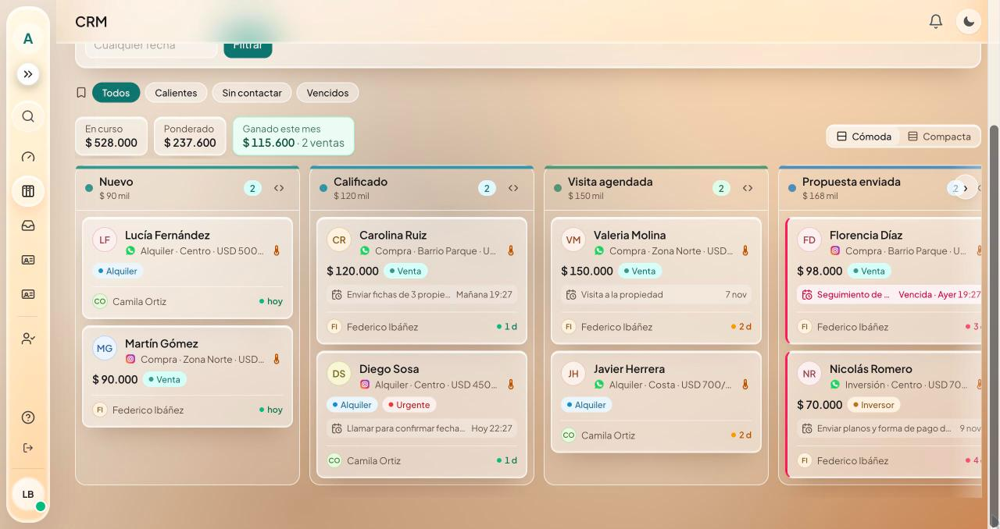

Prototipo propio, datos ficticios
Bot de WhatsApp e Instagram con CRM de ventas
Para una inmobiliaria que recibe consultas todo el día y pierde tiempo filtrando. El asistente responde al instante, califica cada consulta por operación, zona y presupuesto, y la deriva al asesor de esa zona.
- Embudo por etapas con valor, tareas y alertas de leads estancados
- Cada asesor ve solo lo suyo; la gerencia ve todo
- Tablero con conversión, embudo y meta mensual
Hecho con Next.js, TypeScript, PostgreSQL, WhatsApp Cloud API, Instagram (API de Meta), OpenAI y Docker.
